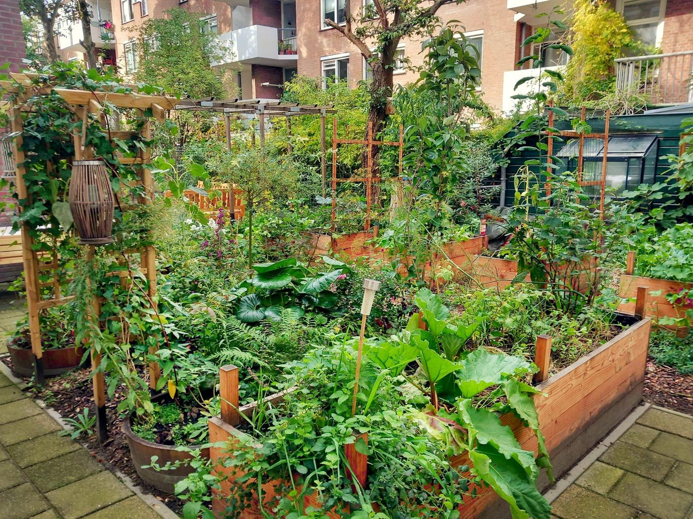
Permaculture workshop – The Dapperhuis Garden
A place where nature, food, biodiversity and community come together. From design and construction to harvest and maintenance, we learn from natural processes together.
More about the gardenWelcome to Stichting Dandelion Circularity
We work to strengthen the connection between people, nature and community.
We believe that wellbeing grows when people once again find room to work together, share knowledge and experiences, care for their surroundings and reconnect with themselves, with each other and with the natural world we are part of.
Nature shows us that healthy systems arise through cooperation, reciprocity and balance. Guided by these principles of circularity, sustainability and community building, we organise practical activities where people meet, learn from each other and together build a healthy and resilient future.
We also pay attention to food awareness and to the knowledge and skills that help people experience more control and autonomy in their daily lives.
From seed to harvest and from harvest to preserving, we rediscover the value of natural cycles, craftsmanship and sharing knowledge between people and generations.
In this way we are building communities together in which people can learn, recover, grow and contribute.
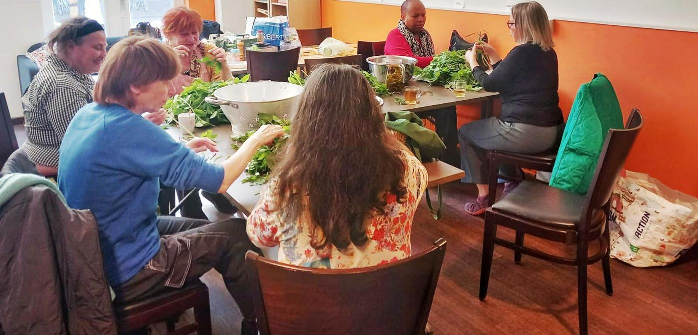
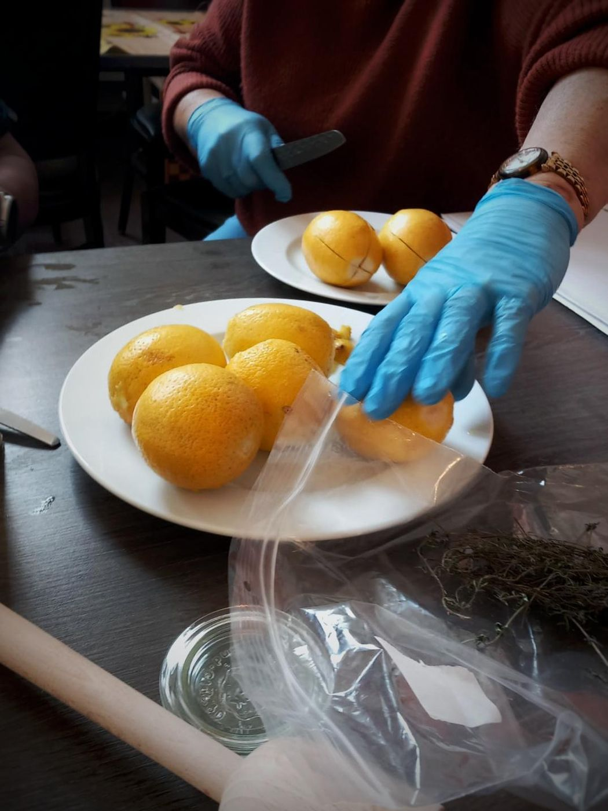

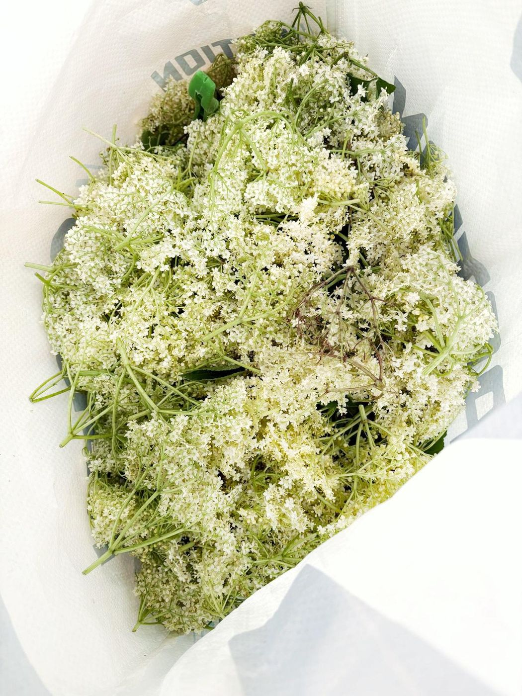
From seed to harvest and from harvest to preserving.

A place where nature, food, biodiversity and community come together. From design and construction to harvest and maintenance, we learn from natural processes together.
More about the garden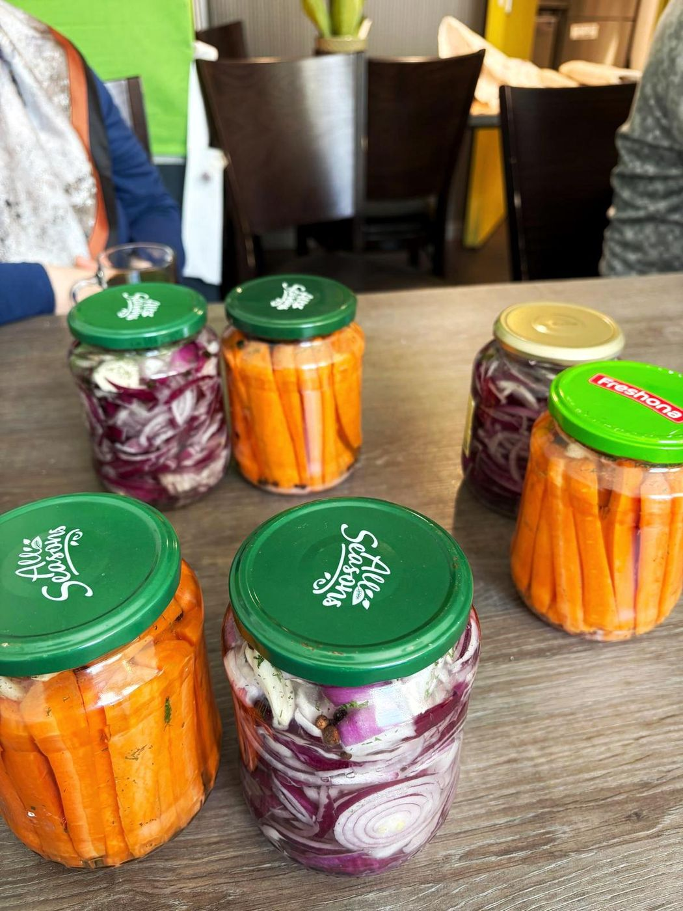
From harvest to pantry. Together we learn age-old techniques such as fermenting, pickling and drying, and pass on knowledge that was taken for granted for generations.
More about the workshopWe believe that recovery and autonomy grow in relation to others. That is why we create places where people can meet, support and inspire one another.
Garden days take place about once a week between March and October.
The preserving workshops take place about once every two weeks.
The dandelion is a remarkable plant.
It grows where few other plants can. Between paving stones, along walls and even through concrete, it finds its way to the light.
Where others see a weed, we see resilience, recovery and vitality.
The dandelion shows that growth remains possible, even in difficult circumstances. For us it symbolises the strength every person has to begin again, to develop and to find their own path.
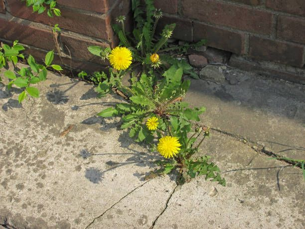
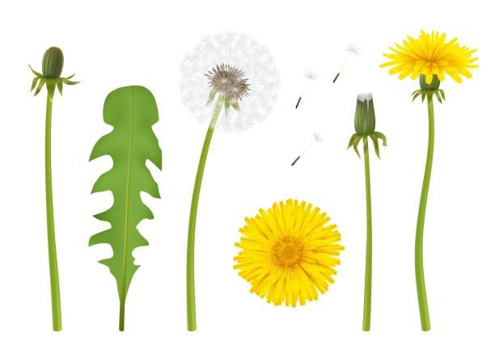
What's more, every part of the dandelion can be used.
The root, leaves, flowers and seeds all have their own value. For centuries the plant has been used as food and medicine. Nothing goes to waste.
That is why the dandelion stands for one of our most important convictions: every person has valuable knowledge, experiences, talents and possibilities.
Because in the end, nobody grows alone.
We are the light for one another.
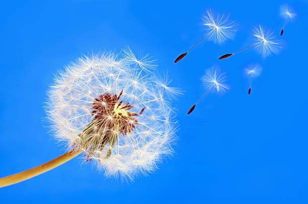
Circularity refers to the cycles of nature.
In a healthy ecosystem there is no waste. What dies becomes food for new life. Leaves become compost, compost feeds the soil, and from that soil new growth emerges.
Nature works through reciprocity, cooperation and constant renewal. This absence of waste in natural systems inspires us. We believe that human communities, economies and organisations can learn a great deal from these principles.
For us, circularity means:
Just as nature wastes nothing, we believe that human experience, talents and life stories are valuable too.
Where there was isolation, connection grew.
2020
Stichting Dandelion Circularity has its origins in a time of worldwide disruption. During the coronavirus pandemic in 2020 we experienced, like so many others, the effects of social isolation. At a time when distance became the norm and meeting others grew ever harder, we felt the need to set something against that isolation.
What began with building planters and vegetable boxes from scrap wood, and giving new life to discarded plants and art objects, grew into something far bigger than we could ever have imagined. In a heavily paved street, a small patch of green appeared. People stopped for a chat, drank coffee together, swapped seeds and shared ideas. New friendships formed. Other neighbours were inspired and built their own planters and vegetable boxes. Slowly, not only the look of the street changed, but also the atmosphere in the neighbourhood.
Where there was isolation, connection grew. Where uncertainty and fear had prevailed, there was room for meeting, relaxing and laughing together.
This experience sparked our interest in permaculture. At an allotment association we transformed a garden that had been neglected for years into a lively place full of biodiversity, food production and natural beauty. A place where family, friends and neighbours could come together, learn and enjoy what nature provides.
With the garden's produce we rediscovered old knowledge that earlier generations took for granted: pickling, fermenting, drying and storing.
What once arose out of necessity became for us a source of creativity, self-reliance and mindful use of food and raw materials.
It also gave us a practical way to cope with the rising cost of daily life.
Before long we wanted to share this knowledge rather than keep it to ourselves. Around the same time, lived-experience expertise came onto Victor's path through the Associate Degree in Lived Experience Expertise in Care and Welfare. During this programme the insight grew that recovery, autonomy and connection are inextricably linked.
People recover not only through the support of others, but also by building meaningful relationships again with themselves, their surroundings, the community and nature.
Late 2024
From that thought came the Preserving, Sharing & Sustainability workshop in late 2024. What began as a small-scale initiative grew into a place where people learn and create together, exchange homemade products, share experiences and support each other.
2025
In 2025 a new initiative followed, in collaboration with the Dapperhuis and Dynamo. The Dapperhuis back garden consisted largely of paving and unused space. Together we developed a plan to transform this place into a permaculture garden where biodiversity, food awareness, meeting and recovery come together. The City of Amsterdam supported this initiative, which made the permaculture garden at the Dapperhuis a reality.
The garden offers local residents a place to step away from the bustle of the city for a moment, to find calm and to reconnect with themselves, each other and nature. Here you can see how food grows: from seed to harvest, and from harvest to preserving.
When the first garlic and salad greens were in the ground, it also became clear that these activities were part of something larger. That is how the idea for Stichting Dandelion Circularity was born.
We believe that people, communities and ecosystems are connected. Nobody holds the solution alone. Lasting change comes through cooperation, reciprocity and the awareness that we are all part of a greater whole.
That is why we work with residents, volunteers, organisations and professionals on places where people can grow, recover, learn and contribute.
Because just as everything in nature is connected, so it is with us as people.
Restoring the autonomy and wellbeing of people in vulnerable situations and disruption by strengthening the relationship between people and nature, with circularity as the guiding principle.
Nature shows that healthy and resilient systems grow out of cooperation, reciprocity and balance. Guided by these principles, we shape practical activities in which people meet, share knowledge and experiences, and build a sustainable future together. In doing so, we strengthen food awareness and the knowledge and skills that help people experience more control and autonomy in their daily lives. From seed to harvest and from harvest to preserving, we rediscover the value of natural cycles, craftsmanship and passing on knowledge between people and generations. In this way we contribute to communities in which people find room to learn, recover, grow and contribute from their own abilities.
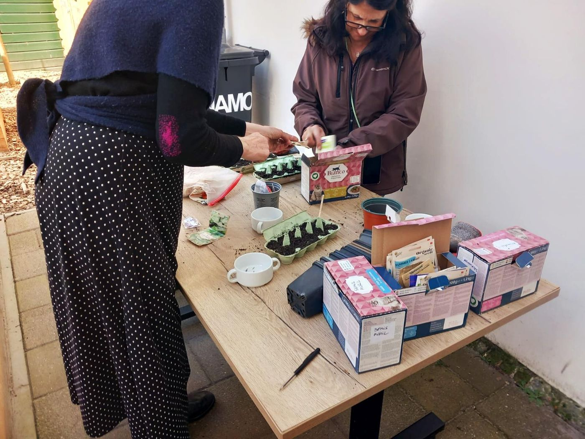
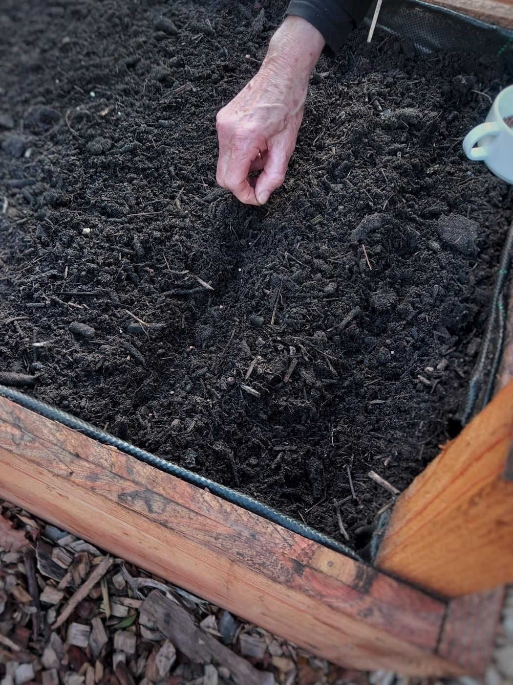
We dream of a society in which people are not reduced to their problems or labels, but are seen and valued for their possibilities, talents and humanity.
A society in which recovery, autonomy, connection with nature and social connection come together in sustainable and inclusive communities. We believe that wellbeing grows when people are given room to work together, share knowledge and experiences, care for their surroundings and reconnect with themselves, each other and the natural world we are an inseparable part of.
Recovery is a process of growth, resilience and finding balance again.
Everyone has both the right and the ability to direct their own life.
People, nature and community are inextricably connected.
We take our inspiration from natural cycles in which nothing goes to waste.
Learning, working, meeting and building strong communities together.
Sharing and passing on knowledge, skills, craftsmanship and lived-experience expertise between people and generations.
Everyone is welcome, whatever their experience or background.
Permaculture is a way of designing and living inspired by natural ecosystems. In nature, plants, animals, soil life and the seasons work together in a continuous process of growth, decay and renewal. Permaculture teaches us how to apply these natural principles in our own surroundings.
In the Dapperhuis Garden we put these principles into practice.
The Dapperhuis Garden is where our permaculture workshops take place.
Here, participants learn how natural ecosystems function and how these principles can be applied in a productive, biodiverse and sustainable garden.
Together we design, build, maintain and develop the garden. It is at once a learning environment, a meeting place and a working example of circular thinking.
The garden is a living learning environment where participants design, sow, plant, compost, observe and harvest together. Nature, recovery and community building come together here.
The garden is designed according to permaculture principles and maintained jointly by participants. It is a place where people can slow down, learn, meet and contribute in their own way.
The Dapperhuis Garden is more than a garden.
Many participants experience stress, loneliness, overload or other forms of disruption. Contact with nature can help people find calm, balance and confidence again.
In the garden we work from presence, not performance. There is room to take an active part, to observe quietly or simply to enjoy nature.
Nature teaches us that growth takes time and that rest is just as important as activity.
We also regularly organise themed gatherings and workshops.
For anyone looking for:
Participants learn, among other things:
Together we celebrate what grows.
The garden's yield is not only vegetables, herbs and flowers, but also:
The harvest is shared and celebrated together.
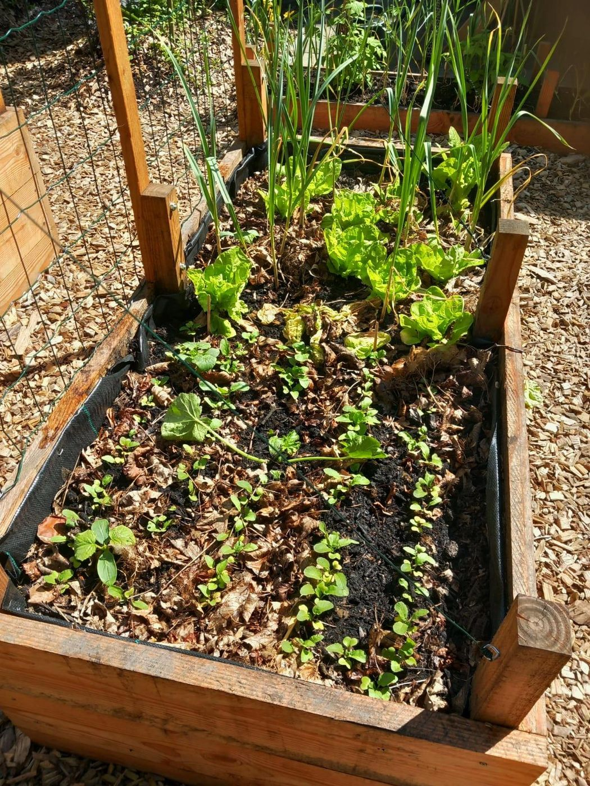
Whether you have green fingers or have never planted a seed: you are very welcome.
Garden days take place about once a week between March and October.
The Dapperhuis, Eerste van Swindenstraat 511, Amsterdam-Oost
Get in touch for more informationThe workshop is guided from lived-experience expertise. In 2025 Victor van de Poel completed the Associate Degree in Lived Experience Expertise in Care and Welfare at the Amsterdam University of Applied Sciences (HvA).
Disruption, recovery, autonomy and resilience are not abstract concepts, but experiences that are actively drawn on when guiding participants.
This creates an environment of equals, with room for everyone's story and pace.
From harvest to pantry.
Preserving food is an age-old way to make harvests last longer and to prevent food waste.
By processing food yourself, you learn to be more mindful of what nature provides and you become more self-reliant.
Preserving is not only practical, but also creative, connecting and relaxing. Exchanging homemade products saves not only money but also time.
The workshop is a natural complement to the permaculture garden.
What grows in the garden can be turned into products that keep for longer. In this way participants get to know the whole cycle: from soil and seed to harvest and preserving.

During the workshops you can get to know:
Such as sauerkraut, kimchi and fermented vegetables.
Preserving vegetables, fruit, pestos and chutneys, and soups.
Herbs, fruit and other products.
Working with seasonal produce.
Natural and sustainable alternatives.
Depending on the wishes of the group.
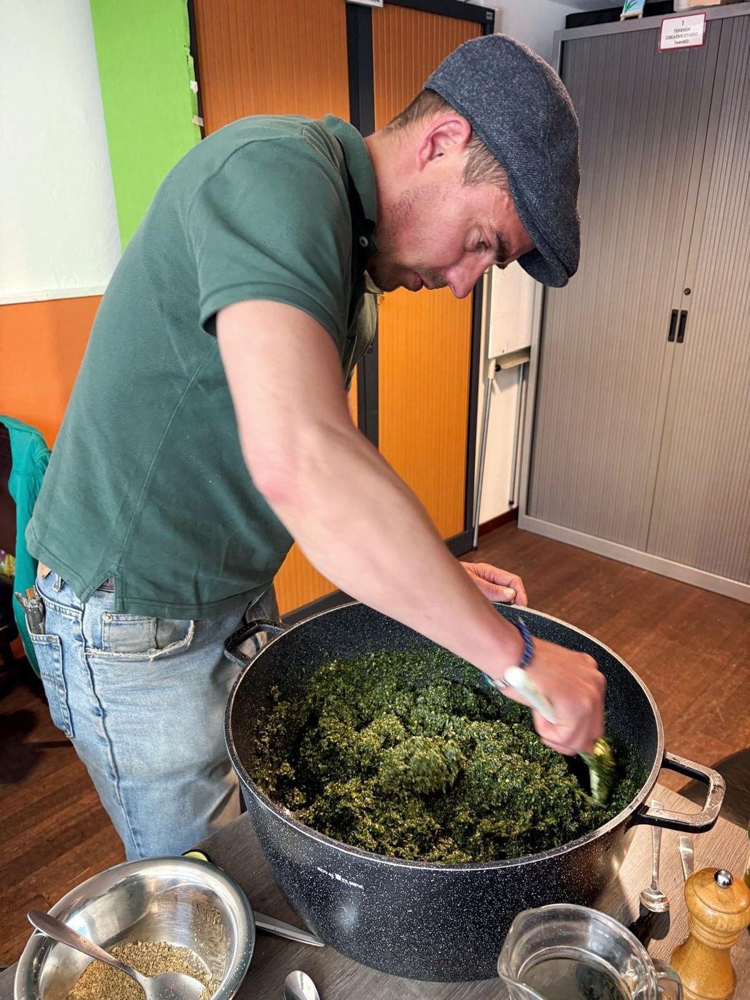
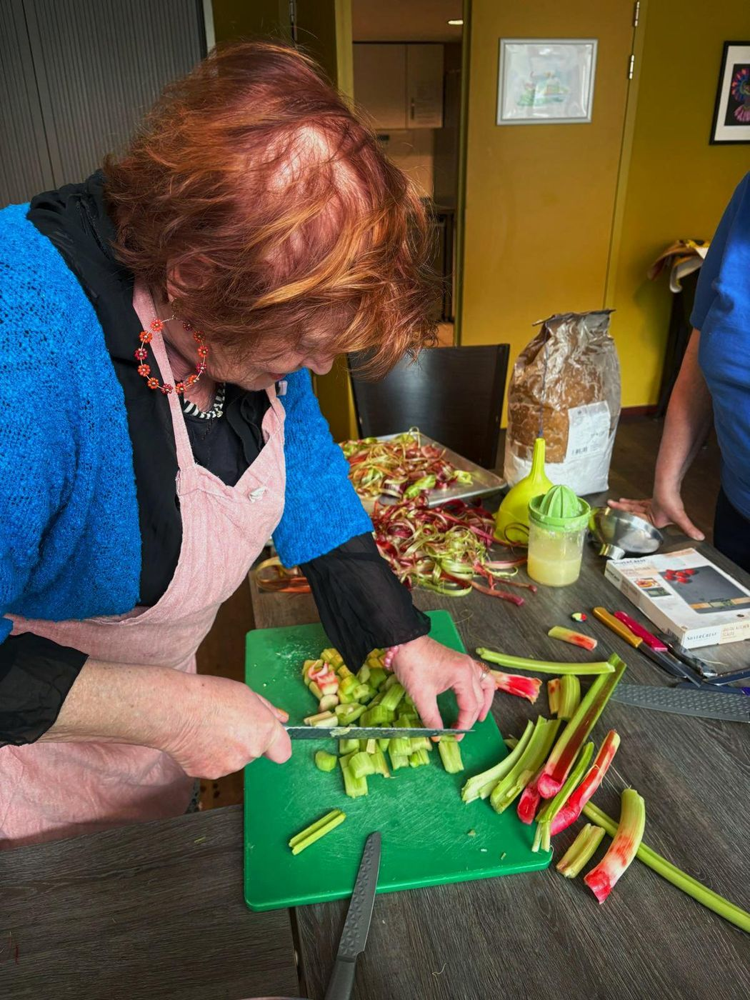
The workshop is not just about technique. Some people already have experience and others are just starting out; what counts is the motivation to learn, share and exchange with each other.
Cooking, making and tasting together creates meeting and connection. Participants support each other, exchange culinary traditions and experiences, and together build a safe community. There is knowledge all around, and so everyone contributes something to making the workshop a success.
Many participants say they carry on at home with what they have learned, and share their products with family, friends, neighbours and other participants.
The workshop offers a safe environment in which people learn together, share experiences, exchange homemade products and support each other.
Many participants experience more self-confidence, connection and inner strength.
The workshop is guided from lived-experience expertise. In 2025 Victor van de Poel completed the Associate Degree in Lived Experience Expertise in Care and Welfare at the Amsterdam University of Applied Sciences (HvA).
Disruption, recovery, autonomy and resilience are not abstract concepts, but experiences that are actively drawn on when guiding participants.
This creates an environment of equals, with room for everyone's story and pace.
The preserving workshops take place about once every two weeks at the Dapperhuis, Eerste van Swindenstraat 511, Amsterdam-Oost.
The construction and development of the Dapperhuis Garden, its biodiversity and the activities of participants.
A video is only loaded from YouTube when you click play. YouTube may then process data about you. Read more in our cookie policy.
{{videos}}Help as a volunteer, sponsor or donor.
Your contribution goes towards the foundation's mission: recovery, autonomy and connection.
The account number will be listed here soon. Would you like to contribute now? Please get in touch.
In the name of Stichting Dandelion Circularity
Chamber of Commerce (KvK): 42091427
Our activities are made possible by committed volunteers.
Whether you have green fingers, love organising, want to share knowledge or are keen to learn: everyone is welcome to take part.
Together we are building a sustainable community centred on learning, meeting and working together.
Become a volunteer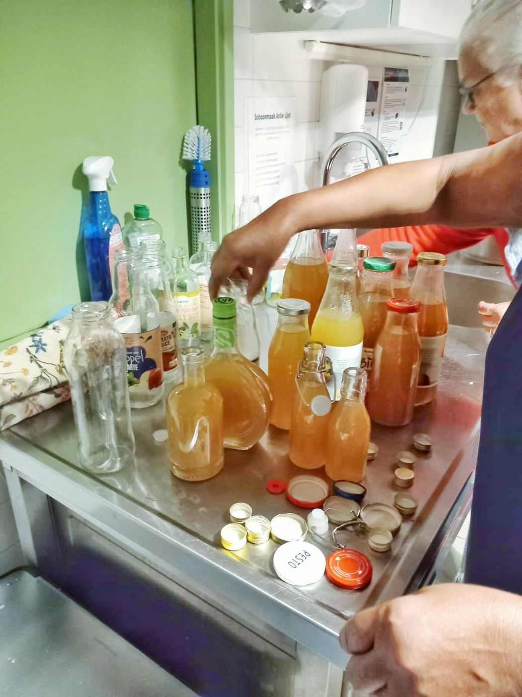
Garden days, workshops and harvest festivals, and what is growing in the garden.
Garden days take place about once a week between March and October.
The preserving workshops take place about once every two weeks.
The harvest is shared and celebrated together. Dates to follow.
Would you like to know when the next gathering is? Get in touch.
Nobody holds the solution alone.
Stichting Dandelion Circularity is governed by an unpaid board. Board members receive no payment for their work. They volunteer their time for the foundation's mission.
Executive board member
Board member
Board member
Published every year.
Do you have questions or ideas, or would you like to work together?
Feel free to contact us. We would be glad to talk.
Together we are building recovery, autonomy and connection.
Stichting Dandelion Circularity handles your personal data with care.
We do not collect any personal data ourselves through this website: there is no contact form and there are no accounts. If you contact us by email or phone, or sign up for an activity or as a volunteer, we use the details you share with us, such as your name and contact details.
We use this data only to answer your question and to organise our activities. We do not sell your data and we do not keep it longer than necessary.
We only publish recognisable photos and videos of people on this website if they have given permission. If you would like a photo or video removed, please let us know.
Our videos are hosted on YouTube. On the Photos and videos page you first see only an image hosted on our own website. The video is only loaded from YouTube (Google) when you click play, using YouTube's privacy-enhanced mode (youtube-nocookie.com). YouTube may then process data such as your IP address, and use cookies or similar technologies. Google's privacy policy applies.
You can ask us what data we hold about you and have it corrected or deleted. To do so, email dandelioncircularity@gmail.com. You also have the right to lodge a complaint with the Dutch Data Protection Authority (Autoriteit Persoonsgegevens).
This website does not place cookies itself and does not use trackers or analytics services.
The Photos and videos page contains videos from YouTube. They are only loaded when you click play yourself. Until then, the page makes no connection to YouTube. When you click play, the video loads using YouTube's privacy-enhanced mode (youtube-nocookie.com). YouTube may then use cookies or similar technologies. That is decided by YouTube (Google), not by us. See Google's cookie policy.
Would you rather not? Then don't play the videos. The rest of the website works as normal. If anything changes, we will update this page.